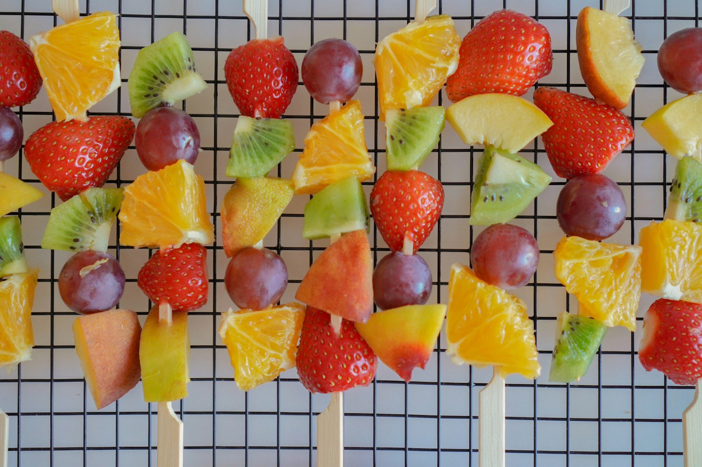

Fresh Fruit Skewers

Description
Colorful and refreshing fruit skewers are perfect for parties, picnics, or as a healthy snack. Served with a honey-yogurt dip, these skewers are both nutritious and delicious!
Ingredients
- For the Skewers:
- 1 pineapple, cubed
- 2 mangoes, cubed
- 2 cups strawberries
- 2 cups green grapes
- 2 kiwis, sliced
- 1 cup blueberries
- 2 bananas, sliced (optional)
- 12-15 wooden skewers
- For the Honey-Yogurt Dip:
- 1 cup Greek yogurt
- 2 tablespoons honey
- 1 teaspoon vanilla extract
- Zest of 1 lime (optional)
Steps
- Preparation:
- Wash all fruits thoroughly
- Cut fruits into similar-sized pieces
- If using wooden skewers, soak in water for 30 minutes
- Assembly:
- Thread fruits onto skewers in a colorful pattern
- Alternate different fruits for visual appeal
- Leave small gaps between pieces
- If using bananas, add them last to prevent browning
- For the Dip:
- In a bowl, combine Greek yogurt and honey
- Stir in vanilla extract
- Add lime zest if using
- Mix until smooth
- Chill until ready to serve
Tips
- Choose firm, ripe fruits
- Cut fruits in similar sizes for easy eating
- If preparing ahead, brush cut fruits with lemon juice to prevent browning
- Keep refrigerated until serving
- Can be made up to 4 hours in advance
Variations
- Try with different seasonal fruits
- Use chocolate dip instead of yogurt
- Add mint leaves for garnish
- Drizzle with honey before serving
Return to Main Page